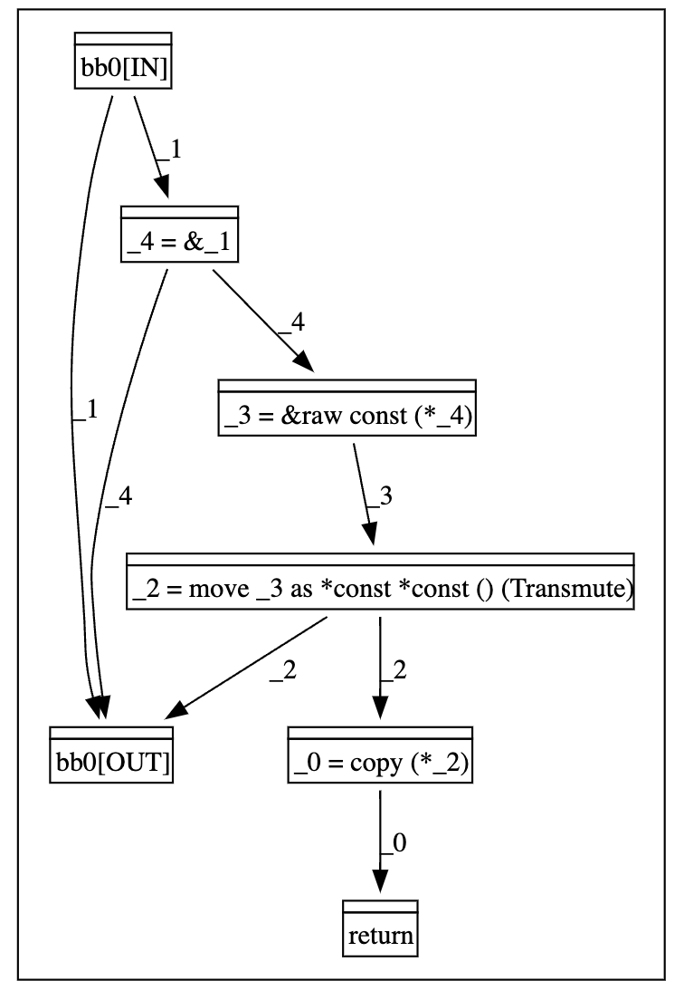

Foreword
Rust has gained significant popularity as a system programming language, valued for its capacity to guarantee memory safety through compile-time verification without sacrificing runtime performance. Since system programming must sometimes perform low-level tasks, Rust also provides unsafe code to bypass the compiler's safety checks, shifting the responsibility for ensuring memory safety to the developer.Therefore, linters are developed to automatically detect common errors and potential misuses of unsafe code. The common approach for existing Rust linters is to embed the checking logic directly into their implementation, which limits their customizability and extensibility. To address this limitation, we introduce RPL, an extensible and customizable Rust linter. The key feature of RPL is the decoupling of checking rules' definition from their detection logic. In particular, RPL consists of two primary components: a Domain-Specific Language (DSL) that allows developers to model/define code patterns, and a detection engine to detect instances of these patterns.
While RPL is still under active development, we intend for this document to serve as a comprehensive guide for future contributors and anyone interested in this work.
Carefully we wipe them hour by hour, And let no dust alight.
— stuuupidcat, 2025-04-24, Beijing
Getting Started with RPL
Installation and Quick Start
-
Clone the repository and enter the directory:
git clone https://github.com/RPL-Toolchain/RPL.git && cd RPL -
Install RPL as a cargo subcommand:
cargo install --path . -
Run RPL analysis on your Rust project:
RPL_PATS=/path/to/RPL/docs/patterns-pest cargo +nightly-2025-02-14 rpl(using built-in RPL pattern definitions based on inline MIR)RUSTFLAGS="-Zinline-mir=false" RPL_PATS=/path/to/RPL/docs/patterns-pest cargo +nightly-2025-02-14 rpl(using built-in RPL pattern definitions based on MIR)
We have the following plans for easing the usage of RPL:
- Integration of standard patterns: Provide a set of commonly used patterns as part of RPL’s standard library.
- Configuration-based pattern management: Introduce a
rpl.tomlconfiguration file to manage RPL patterns in a structured and centralized manner.
Introduction To MIR
Before delving into the specifics of RPL's pattern modeling language, this chapter will first provide an introduction to Rust's Mid-level Intermediate Representation (MIR). A foundational understanding of MIR is essential, as RPL's entire approach to modeling function logic is directly based on its structure and semantics. Accordingly, the following sections will begin with an overview of MIR before proceeding to a detailed guide on the pattern modeling language itself.
Intermediate Representation
What is IR?
In the architecture of a modern compiler, the process of translating human-readable source code into machine-executable code is not a single, monolithic step. Instead, the compiler is typically divided into three main stages: the frontend, the middle-end, and the backend. The Intermediate Representation (IR) is the crucial data structure or code format that acts as the bridge between the frontend and the backend.
-
Frontend: Parses the source code (like Rust, C++, or Swift), checks for syntax errors, and performs semantic analysis. It then translates the source code into an IR.
-
Middle-end (Optimizer): Takes the IR from the frontend, performs a series of machine-independent optimizations to improve the code's performance and efficiency. The output of this stage is still the (now optimized) IR.
-
Backend (Code Generator): Takes the optimized IR and translates it into machine code for a specific target architecture (like x86-64, ARM64, etc.).
The use of an IR provides a powerful abstraction that decouples the source language from the target machine. This means you can write frontends for many different languages and backends for many different architectures, and have them all work together through the common IR.
LLVM (Low Level Virtual Machine) is a collection of modular and reusable compiler and toolchain technologies. Its Intermediate Representation, LLVM IR, is one of its most influential components. It's a low-level, statically typed, and language-independent IR designed to be the target of a wide variety of frontends and the source for many backends.A key feature of LLVM IR is that it is in Static Single Assignment (SSA) form. In SSA form, every variable is assigned a value exactly once. If a variable's value needs to be updated (e.g., in a loop), a new variable is created instead. This makes many optimizations, like data-flow analysis, significantly simpler to implement.
The following example shows the LLVM IR and machine code of a simple C code:
C code:
int add(int a, int b) {
int result = a + b;
return result;
}
LLVM IR:
; Generated by Clang 17.0.0 (clang-1700.0.13.3)
; clang -S -emit-llvm add.c -o add.ll -O1
; ModuleID = 'add.c'
source_filename = "add.c"
target datalayout = "e-m:o-i64:64-i128:128-n32:64-S128-Fn32"
target triple = "arm64-apple-macosx15.0.0"
; Function Attrs: mustprogress nofree norecurse nosync nounwind ssp willreturn memory(none) uwtable(sync)
define i32 @add(i32 noundef %0, i32 noundef %1) local_unnamed_addr #0 {
%3 = add nsw i32 %1, %0
ret i32 %3
}
attributes #0 = { mustprogress nofree norecurse nosync nounwind ssp willreturn memory(none) uwtable(sync) "frame-pointer"="non-leaf" "no-trapping-math"="true" "probe-stack"="__chkstk_darwin" "stack-protector-buffer-size"="8" "target-cpu"="apple-m1" "target-features"="+aes,+altnzcv,+bti,+ccdp,+ccidx,+complxnum,+crc,+dit,+dotprod,+flagm,+fp-armv8,+fp16fml,+fptoint,+fullfp16,+jsconv,+lse,+neon,+pauth,+perfmon,+predres,+ras,+rcpc,+rdm,+sb,+sha2,+sha3,+specrestrict,+ssbs,+v8.1a,+v8.2a,+v8.3a,+v8.4a,+v8.5a,+v8a,+zcm,+zcz" }
!llvm.module.flags = !{!0, !1, !2, !3, !4}
!llvm.ident = !{!5}
!0 = !{i32 2, !"SDK Version", [2 x i32] [i32 15, i32 4]}
!1 = !{i32 1, !"wchar_size", i32 4}
!2 = !{i32 8, !"PIC Level", i32 2}
!3 = !{i32 7, !"uwtable", i32 1}
!4 = !{i32 7, !"frame-pointer", i32 1}
!5 = !{!"Apple clang version 17.0.0 (clang-1700.0.13.3)"}
Machine code:
add:
lea eax, [rdi+rsi]
ret
The LLVM IR represents a optimized version of a function named @add which computes the sum of two 32-bit integers. It directly takes the two input registers (%0 and %1), performs the addition with a single add instruction, and immediately returns the result (%3). The function attributes, such as memory(none) (indicating it doesn't read or write from memory) and willreturn, confirm that the compiler has aggressively optimized the code, eliminating all unnecessary memory operations.
Rust's Intermediate Representations
The Rust compiler transforms source code into machine code through a pipeline of intermediate representations (IRs). This journey from high-level to low-level code involves several key stages:
- HIR (High-level IR)
- THIR (Typed HIR)
- MIR (Mid-level IR)
- LLVM IR
To see this process in action, we'll examine the IRs generated for the following generic add function.
#![allow(unused)] fn main() { use std::ops::Add; fn add<T: Add<Output = T>>(a: T, b: T) -> T { a + b } }
HIR - High-Level Intermediate Representation
The HIR is the primary IR used in most of rustc. It is a compiler-friendly representation of the abstract syntax tree (AST).
- HIR is generated after parsing, macro expansion, and name resolution.
HIR is used for type checking.
#![allow(unused)] fn main() { // cargo rustc -- -Z unpretty=hir #[prelude_import] use std::prelude::rust_2024::*; #[attr = MacroUse {arguments: UseAll}] extern crate std; use std::ops::Add; fn add<T>(a: T, b: T) -> T where T: Add<Output = T> { a + b } }
THIR - Typed High-Level Intermediate Representation
The THIR is a lowered version of the HIR where all the types have been filled in, which is possible after type checking has completed. But it has some other features that distinguish it from the HIR:
- Like the MIR, the THIR only represents bodies, i.e. "executable code"; this includes function bodies, but also const initializers.
- Each body of THIR is only stored temporarily and is dropped as soon as it's no longer needed, as opposed to being stored until the end of the compilation process.
- Besides making the types of all nodes available, the THIR also has additional desugaring compared to the HIR. For example, automatic references and dereferences are made explicit, and method calls and overloaded operators are converted into plain function calls. Destruction scopes are also made explicit.
- Statements, expressions, and match arms are stored separately.
THIR is used for MIR construction, exhaustiveness checking, and unsafety checking.
#![allow(unused)] fn main() { // cargo rustc -- -Z unpretty=thir-flat DefId(0:4 ~ rust_playground[a18a]::add): Thir { body_type: Fn( fn(T/#0, T/#0) -> T/#0, ), arms: [], blocks: [ Block { targeted_by_break: false, region_scope: Node(5), span: src/lib.rs:3:45: 5:2 (#0), stmts: [], expr: Some( e6, ), safety_mode: Safe, }, ], exprs: [ Expr { kind: VarRef { id: LocalVarId( HirId(DefId(0:4 ~ rust_playground[a18a]::add).2), ), }, ty: T/#0, temp_lifetime: TempLifetime { temp_lifetime: Some( Node(11), ), backwards_incompatible: None, }, span: src/lib.rs:4:5: 4:6 (#0), }, Expr { kind: Scope { region_scope: Node(7), lint_level: Explicit( HirId(DefId(0:4 ~ rust_playground[a18a]::add).7), ), value: e0, }, ty: T/#0, temp_lifetime: TempLifetime { temp_lifetime: Some( Node(11), ), backwards_incompatible: None, }, span: src/lib.rs:4:5: 4:6 (#0), }, Expr { kind: VarRef { id: LocalVarId( HirId(DefId(0:4 ~ rust_playground[a18a]::add).4), ), }, ty: T/#0, temp_lifetime: TempLifetime { temp_lifetime: Some( Node(11), ), backwards_incompatible: None, }, span: src/lib.rs:4:9: 4:10 (#0), }, Expr { kind: Scope { region_scope: Node(9), lint_level: Explicit( HirId(DefId(0:4 ~ rust_playground[a18a]::add).9), ), value: e2, }, ty: T/#0, temp_lifetime: TempLifetime { temp_lifetime: Some( Node(11), ), backwards_incompatible: None, }, span: src/lib.rs:4:9: 4:10 (#0), }, Expr { kind: ZstLiteral { user_ty: None, }, ty: FnDef( DefId(2:3797 ~ core[f655]::ops::arith::Add::add), [ T/#0, T/#0, ], ), temp_lifetime: TempLifetime { temp_lifetime: Some( Node(11), ), backwards_incompatible: None, }, span: src/lib.rs:4:5: 4:10 (#0), }, Expr { kind: Call { ty: FnDef( DefId(2:3797 ~ core[f655]::ops::arith::Add::add), [ T/#0, T/#0, ], ), fun: e4, args: [ e1, e3, ], from_hir_call: false, fn_span: src/lib.rs:4:5: 4:10 (#0), }, ty: T/#0, temp_lifetime: TempLifetime { temp_lifetime: Some( Node(11), ), backwards_incompatible: None, }, span: src/lib.rs:4:5: 4:10 (#0), }, Expr { kind: Scope { region_scope: Node(6), lint_level: Explicit( HirId(DefId(0:4 ~ rust_playground[a18a]::add).6), ), value: e5, }, ty: T/#0, temp_lifetime: TempLifetime { temp_lifetime: Some( Node(11), ), backwards_incompatible: None, }, span: src/lib.rs:4:5: 4:10 (#0), }, Expr { kind: Block { block: b0, }, ty: T/#0, temp_lifetime: TempLifetime { temp_lifetime: Some( Node(11), ), backwards_incompatible: None, }, span: src/lib.rs:3:45: 5:2 (#0), }, Expr { kind: Scope { region_scope: Node(11), lint_level: Explicit( HirId(DefId(0:4 ~ rust_playground[a18a]::add).11), ), value: e7, }, ty: T/#0, temp_lifetime: TempLifetime { temp_lifetime: Some( Node(11), ), backwards_incompatible: None, }, span: src/lib.rs:3:45: 5:2 (#0), }, ], stmts: [], params: [ Param { pat: Some( Pat { ty: T/#0, span: src/lib.rs:3:28: 3:29 (#0), kind: Binding { name: "a", mode: BindingMode( No, Not, ), var: LocalVarId( HirId(DefId(0:4 ~ rust_playground[a18a]::add).2), ), ty: T/#0, subpattern: None, is_primary: true, }, }, ), ty: T/#0, ty_span: Some( src/lib.rs:3:31: 3:32 (#0), ), self_kind: None, hir_id: Some( HirId(DefId(0:4 ~ rust_playground[a18a]::add).1), ), }, Param { pat: Some( Pat { ty: T/#0, span: src/lib.rs:3:34: 3:35 (#0), kind: Binding { name: "b", mode: BindingMode( No, Not, ), var: LocalVarId( HirId(DefId(0:4 ~ rust_playground[a18a]::add).4), ), ty: T/#0, subpattern: None, is_primary: true, }, }, ), ty: T/#0, ty_span: Some( src/lib.rs:3:37: 3:38 (#0), ), self_kind: None, hir_id: Some( HirId(DefId(0:4 ~ rust_playground[a18a]::add).3), ), }, ], } }
MIR - Mid-Level Intermediate Representation
MIR is Rust's Mid-level Intermediate Representation. It is constructed from THIR.
Some of the key characteristics of MIR are:
- It is based on a control-flow graph.
- It does not have nested expressions.
- All types in MIR are fully explicit.
MIR is used for certain flow-sensitive safety checks (borrow checker) , optimization, code generation.
#![allow(unused)] fn main() { // cargo rustc -- -Z unpretty=mir fn add(_1: T, _2: T) -> T { debug a => _1; debug b => _2; let mut _0: T; bb0: { _0 = <T as Add>::add(move _1, move _2) -> [return: bb1, unwind continue]; } bb1: { return; } } }
The Core Concepts of MIR
Control-Flow Graph
The foundational structure of MIR is the Control-Flow Graph. The CFG represents a program as a directed graph where nodes are basic blocks and edges represent the flow of control between them.
BasicBlock
A BasicBlock is a node in the CFG. It is a straight-line sequence of code with a single entry point and a single exit point, where no branches or jumps occur within the block. In Rust MIR, a basic block is defined as a sequence of zero or more Statements followed by exactly one Terminator. This structure guarantees that control flow can only enter at the beginning of the block and can only exit at the end, via the terminator. There are no branches or jumps in the middle of a basic block.
In current version of rustc (1.91.0-nightly), the data structure of a basic block is defined as follows:
#![allow(unused)] fn main() { #[non_exhaustive] pub struct BasicBlockData<'tcx> { pub statements: Vec<Statement<'tcx>>, pub terminator: Option<Terminator<'tcx>>, pub is_cleanup: bool, // Whether this block is a cleanup block in an unwind path } }
Statement
A Statement represents an action that occurs within a basic block. Crucially, statements have a single, implicit successor: the next statement in the block or, if it is the last one, the block's terminator.
In current version of rustc (1.91.0-nightly), there are 14 kinds of statements.
#![allow(unused)] fn main() { pub enum StatementKind<'tcx> { Assign(Box<(Place<'tcx>, Rvalue<'tcx>)>), FakeRead(Box<(FakeReadCause, Place<'tcx>)>), SetDiscriminant { place: Box<Place<'tcx>>, variant_index: VariantIdx, }, Deinit(Box<Place<'tcx>>), StorageLive(Local), StorageDead(Local), Retag(RetagKind, Box<Place<'tcx>>), PlaceMention(Box<Place<'tcx>>), AscribeUserType(Box<(Place<'tcx>, UserTypeProjection)>, Variance), Coverage(CoverageKind), Intrinsic(Box<NonDivergingIntrinsic<'tcx>>), ConstEvalCounter, Nop, BackwardIncompatibleDropHint { place: Box<Place<'tcx>>, reason: BackwardIncompatibleDropReason, }, } }
In most cases, we only use Assign statements when modeling the logic of a function body.
Terminator
A Terminator is the final instruction in every basic block and is the sole mechanism for directing control flow between blocks. It explicitly defines the successor(s) to the current block. This is where all branching, function calls, returns, and panics are represented. A terminator can have zero successors (e.g., return), one successor (e.g., goto), or multiple successors (e.g., switchInt for an if or match, or Call which has a success path and a potential unwind path).
In current version of rustc (1.91.0-nightly), there are 10 kinds of terminators.
#![allow(unused)] fn main() { pub enum TerminatorKind<'tcx> { Goto { target: BasicBlock, }, SwitchInt { discr: Operand<'tcx>, targets: SwitchTargets, }, UnwindResume, UnwindTerminate(UnwindTerminateReason), Return, Unreachable, Drop { place: Place<'tcx>, target: BasicBlock, unwind: UnwindAction, replace: bool, drop: Option<BasicBlock>, async_fut: Option<Local>, }, Call { func: Operand<'tcx>, args: Box<[Spanned<Operand<'tcx>>]>, destination: Place<'tcx>, target: Option<BasicBlock>, unwind: UnwindAction, call_source: CallSource, fn_span: Span, }, TailCall { func: Operand<'tcx>, args: Box<[Spanned<Operand<'tcx>>]>, fn_span: Span, }, Assert { cond: Operand<'tcx>, expected: bool, msg: Box<AssertMessage<'tcx>>, target: BasicBlock, unwind: UnwindAction, }, Yield { value: Operand<'tcx>, resume: BasicBlock, resume_arg: Place<'tcx>, drop: Option<BasicBlock>, }, CoroutineDrop, FalseEdge { real_target: BasicBlock, imaginary_target: BasicBlock, }, FalseUnwind { real_target: BasicBlock, unwind: UnwindAction, }, InlineAsm { asm_macro: InlineAsmMacro, template: &'tcx [InlineAsmTemplatePiece], operands: Box<[InlineAsmOperand<'tcx>]>, options: InlineAsmOptions, line_spans: &'tcx [Span], targets: Box<[BasicBlock]>, unwind: UnwindAction, }, } }
In most cases, we only use Goto, SwitchInt, Return, Drop, and Call statements when modeling the logic of a function body.
Desugared Data Representation
In parallel with simplifying control flow, MIR also simplifies the representation of data and computations. Complex, nested expressions are broken down into a sequence of simple operations on a small set of data-related concepts.
Local
Memory locations allocated on the stack (conceptually, at least).
This includes function arguments, user-declared variables, and compiler-generated temporary variables used to hold intermediate results. In MIR, locals are not identified by name but by a simple index, such as \_0, \_1, \_2, and so on. The local \_0 is always reserved for the return value.
Place
Expressions that identify a location in memory. It is the MIR equivalent of an "l-value" in C.
- The simplest Place is just a Local (e.g., _1).
- More complex Places are formed by starting with a base Local and applying a sequence of projections, such as field access, array indexing, or pointer dereferencing. For example, _1.f represents the field f of the struct stored in local _1, and *_2 represents the memory location pointed to by the local _2.
In current version of rustc (1.91.0-nightly), the data structure of a place is defined as follows:
#![allow(unused)] fn main() { pub struct Place<'tcx> { pub local: Local, pub projection: &'tcx List<PlaceElem<'tcx>>, } pub enum PlaceElem<'tcx> { Deref, Field(FieldIdx, Ty<'tcx>), Index(Local), ConstantIndex { offset: u64, min_length: u64, from_end: bool, }, Subslice { from: u64, to: u64, from_end: bool, }, Downcast(Option<Symbol>, VariantIdx), OpaqueCast(Ty<'tcx>), UnwrapUnsafeBinder(Ty<'tcx>), Subtype(Ty<'tcx>), } }
Rvalue
Expressions that produce a value.
The "R" stands for the fact that these are the "right-hand side" of an assignment.
In current version of rustc (1.91.0-nightly), the data structure of an rvalue is defined as follows:
#![allow(unused)] fn main() { pub enum Rvalue<'tcx> { Use(Operand<'tcx>), Repeat(Operand<'tcx>, Const<'tcx>), Ref(Region<'tcx>, BorrowKind, Place<'tcx>), ThreadLocalRef(DefId), RawPtr(RawPtrKind, Place<'tcx>), Len(Place<'tcx>), Cast(CastKind, Operand<'tcx>, Ty<'tcx>), BinaryOp(BinOp, Box<(Operand<'tcx>, Operand<'tcx>)>), NullaryOp(NullOp<'tcx>, Ty<'tcx>), UnaryOp(UnOp, Operand<'tcx>), Discriminant(Place<'tcx>), Aggregate(Box<AggregateKind<'tcx>>, IndexVec<FieldIdx, Operand<'tcx>>), ShallowInitBox(Operand<'tcx>, Ty<'tcx>), CopyForDeref(Place<'tcx>), WrapUnsafeBinder(Operand<'tcx>, Ty<'tcx>), } }
Operand
The arguments to an Rvalue.
In current version of rustc (1.91.0-nightly), the data structure of an operand is defined as follows:
#![allow(unused)] fn main() { pub enum Operand<'tcx> { Copy(Place<'tcx>), Move(Place<'tcx>), Constant(Box<ConstOperand<'tcx>>), } }
rpl::dump_mir: A Gadget for MIR Dumping
To effectively model a code pattern, it is often necessary to first inspect the MIR of the target function. RPL provides the #[rpl::dump_mir] procedural macro to simplify this process. This macro instructs the customized compiler to output the MIR of a target function, providing clear intermediate artifacts that can be used to model/define a new RPL pattern.
Usage
Using the macro involves a simple two-step process.
(1) Annotate the Target Function: First, apply the #[rpl::dump_mir] attribute directly to the function whose MIR you wish to inspect. The macro accepts optional arguments, such as dump_cfg and dump_ddg, to also generate graph visualizations.
#![allow(unused)] fn main() { use std::mem; #[rpl::dump_mir(dump_cfg, dump_ddg)] pub unsafe fn get_data<T: ?Sized>(val: *const T) -> *const () { unsafe { *mem::transmute::<*const *const T, *const *const ()>(&val) } } }
(2) Run the RPL Linter: Next, run cargo rpl from your project's root directory. For this debugging macro to work, the RPL_PATS environment variable must be set, but it can point to an empty directory if you are only dumping MIR.
RPL_PATS=/path/to/any/pattern/dir cargo rpl
Output
The macro produces output in two places: directly in the console and in a new directory in your project root.
Console Output
The compiler will print the formatted MIR and other diagnostic information directly to your terminal. This includes a breakdown of the function's local variables and the statements within each basic block.
note: MIR of `get_data`
--> src/main.rs:4:1
|
3 | #[rpl::dump_mir(dump_cfg, dump_ddg)]
| ------------------------------------ MIR dumped because of this attribute
...
note: bb0: {
_4 = &_1; // scope[0]
_3 = &raw const (*_4); // scope[0]
_2 = move _3 as *const *const () (Transmute); // scope[0]
_0 = copy (*_2); // scope[0]
return; // scope[0]
}
...
error: abort due to debugging
--> src/main.rs:3:1
|
3 | #[rpl::dump_mir(dump_cfg, dump_ddg)]
| ^^^^^^^^^^^^^^^^^^^^^^^^^^^^^^^^^^^^ help: remove this attribute
Note that the process intentionally ends with an error: abort due to debugging. This is a feature designed to remind you to remove the debugging attribute before committing your code.
Generated Artifacts
The macro will also create a mir_dump directory in your project root containing several files. These artifacts provide a more detailed and persistent record of the function's structure.
mir_dump/
├── rust_playground.get_data.-------.dump_mir..mir
├── rust_playground.get_data.-------.dump_mir..mir.cfg.dot
└── rust_playground.get_data.-------.dump_mir..mir.ddg.dot
-
.mirfile: The raw, textual representation of the function's MIR. -
.cfg.dotfile: A representation of the Control-Flow Graph (CFG) in DOT format, which can be visualized with tools like Graphviz. -
.ddg.dotfile: A representation of the Data-Dependence Graph (DDG) in DOT format.
The following image shows the CFG and DDG of the get_data function.


Modeling a RPL Pattern from MIR
The primary use of the dumped MIR is to serve as a template for a new RPL pattern. The process involves "hollowing out" the concrete MIR by replacing its specific local variables with abstract metavariables.
For example, consider the dumped MIR above:
#![allow(unused)] fn main() { // Dumped MIR from console bb0: { _4: &*const T = &_1; _3: *const *const T = &raw const (*_4); _2: *const *const () = move _3 as *const *const () (Transmute); _0: *const () = copy (*_2); return; } }
Converting the raw MIR dump into a functional RPL pattern is a systematic process. The key steps are to add the necessary syntactic structure and then abstract the logic with metavariables.
- Add
letbindings: Convert each raw MIR assignment (e.g.,_4 = &_1;) into a fullletstatement. - Annotate types: Use the list of locals provided in the MIR dump to add explicit type annotations for each local variable.
- Abstract the pattern with metavariables. This is where you "hollow out" the concrete MIR to make it a general template. You replace the specific, compiler-generated names for locals and types with descriptive, abstract metavariables (prefixed with
$). For example, the concrete local_1of type*const Tbecomes the abstract statementlet $ptr: *const $T = _;. By applying this process to all statements, you transform the specific MIR dump into a reusable pattern.
#![allow(unused)] fn main() { let $ptr: *const $T = _; // _1 let $ref_to_ptr: &*const $T = &$ptr; // _4 let $ptr_to_ptr_t: *const *const $T = &raw const (*$ref_to_ptr); // _3 let $ptr_to_ptr: *const *const () = move $ptr_to_ptr_t as *const *const () (Transmute); // _2 let $data_ptr: *const () = copy (*$ptr_to_ptr); // _0 }
The Pattern Modeling Language
The RPL linter consists of two primary components:
- a domain-specific language for modeling code patterns (It is important to note that while the name RPL originally referred specifically to this modeling language, it has since been broadened to encompass the entire linter toolchain. Consequently, the modeling language itself is currently without a formal name. However, the file extension of the pattern modeling language is still
.rpl.) - a general graph matching engine that serves as the backend.
This chapter will focus exclusively on providing a comprehensive introduction to this pattern modeling language.
Overview
This section provides a high-level overview of the RPL pattern modeling language. To illustrate its core concepts and syntax, we will use the following example, which models the memory safety vulnerability identified in CVE-2020-25016.
The detailed information of
CVE-2020-25016can be found here.
pattern CVE-2020-25016
patt {
#[diag = "p_unsound_cast"]
#[const(mutability_1 = "", mutability_2 = "")]
p_unsound_cast_const[
$T: type where is_all_safe_trait(self) && !is_primitive(self)
] = fn _ (..) -> _ {
'cast_from:
let $from_slice: &[$T] = _;
let $from_raw: *const [$T] = &raw const *$from_slice;
let $from_len: usize = PtrMetadata(copy $from_slice);
let $ty_size: usize = SizeOf($T);
let $to_ptr_t: *const $T = move $from_raw as *const $T (PtrToPtr);
let $to_ptr: *const u8 = move $to_ptr_t as *const u8 (PtrToPtr);
let $to_len: usize = Mul(move $from_len, move $ty_size);
let $to_raw: *const [u8] = *const [u8] from (copy $to_ptr, copy $to_len);
'cast_to:
let $to_slice: &[u8] = &*$to_raw;
}
}
diag {
p_unsound_cast = {
primary(cast_to) = "it is unsound to cast any slice `&{$mutability_1}[{$T}]` to a byte slice `&{$mutability_2}[u8]`",
label(cast_to) = "casted to a byte slice here",
note(cast_from) = "trying to cast from this value of `&{$mutability_1}[{$T}]` type",
level = "deny",
name = "unsound_slice_cast",
}
}
While this example is intentionally simplified for clarity, it effectively showcases nearly all of the language's key syntactic features. The design of the language is guided by three fundamental principles, all of which are visible in this example:
SoC-Based Modularization
The fundamental design principle of the language is modularization. The pattern is divided into distinct blocks: the patt block contains the core detection logic that describes the structure of the code to be found, while the diag block independently defines the reporting logic (the diagnostic message that will be shown to the user). This separation keeps the rule definition clean and maintainable.
Metavariable-based Abstraction
The core mechanism for abstraction is the metavariable. In the example, $T is a metavariable that acts as a named placeholder prefixed with a dollar sign, which can stand in for any concrete Rust type. This allows the pattern to be abstract and general, capable of matching the vulnerability regardless of the specific slice type involved.
The abstraction provided by metavariables works in concert with Mid-Level Intermediate Representation(MIR)-based modeling
to capture the internal logic of functions at a semantic level. Using a syntax that mirrors MIR provides two key benefits:
First, it makes patterns inherently robust against superficial syntax noise. Different programming styles, such as using a single nested expression versus introducing multiple intermediate variables, often generate the same MIR sequence, allowing a single pattern to detect a logical flaw regardless of its specific source-level implementation. Second, it grants our fundamentally intra-procedural analysis certain inter-procedural capabilities. Compiling with the -Zinline-mir flag instructs the Rust compiler to inline the MIR of eligible called functions into their caller, based on internal heuristics like function size. This action merges the logic of these functions, allowing a single pattern to trace a sequence of operations that crosses the original function boundaries.
Predicate-based Refinement
While the MIR-like body defines the structural shape of the pattern, the where clause applies additional semantic constraints. In this case, the predicates is_all_safe_trait and !is_primitive are used to filter the matches for the $T metavariable, ensuring that the rule only flags types where the cast is truly unsound.
File Structure and Code Blocks
The core syntax of the DSL is shown as follows:
<rpl-pattern> ::= <rpl-header> <block-list>
<rpl-header> ::= `pattern' <identifier>
<block> ::= <patt-block>
| <util-block>
| <diag-block>
<block-list> ::= <block> <block-list> | <empty>
<patt-block> ::= `patt' `{' <use-path-list> <rpl-pattern-item-list> `}'
<util-block> ::= `util' `{' <use-path-list> <rpl-pattern-item-list> `}'
<diag-block> ::= `diag' `{' <diag-block-item-list> `}'
<rpl-pattern-item> ::= <attr-list> <identifier> (<meta-variable-decl-list> | <empty>) `=' <rust-items-or-pattern-operation>
We can see that:
- a DSL file begins with a pattern declaration that assigns a name to the detection rule.
- Following this declaration, the file is organized into three kinds of code blocks, each of which serves a specific and independent purpose.
patt block
The patt block is the core of the rule definition, containing one or more named pattern items. Syntactically, each pattern item contains three parts: a unique name, a list of metavariable declarations, and a body. The body is used to define the specific content of the pattern and supports the following three forms:
- modeling one or more abstracted Rust items;
- customizing a single pattern;
- performing logical operations on multiple patterns.
When a pattern item defines a single Rust item, it is typically a function. Alternatively, to model more complex scenarios, a pattern item can define multiple Rust items. A common example of this is pairing a struct or enum definition with its corresponding impl block to represent the relationship between an Abstract Data Type (ADT) and its corresponding methods.
util block
The util block serves as a space for auxiliary definitions that support the patterns in the patt block. While the patt items are the public-facing targets for detection, the patterns defined within util blocks are private helpers.These can include reusable sub-patterns that would otherwise clutter the primary pattern definitions. This separation allows for more modular and readable rules by isolating the reusable utility logic from the specific code patterns that are being captured.
diag block
The diag block is responsible for defining the diagnostic output that is presented to the user when a pattern from the patt block is successfully matched. It maps a pattern's name to a set of diagnostic information, which typically includes the following three components:
- A severity level, such as
denyorwarn, to indicate the seriousness of the detected issue; - A primary descriptive message that explains the problem, which can be accompanied by specific labels that pinpoint locations in the code corresponding to metavariables or specific MIR statements;
- supplemental information to aid the developer, such as a note to provide additional context, or a help message that suggests a potential fix or modification.
These fields can also include links to relevant documentation for further details. By separating the diagnostic messages from the pattern-matching logic, RPL allows for clear and maintainable rules where the detection and reporting concerns are independently managed.
Metavariables
A metavariable is a named placeholder prefixed with a dollar sign (e.g., $T), which can stand in for a concrete code element. For example, to model a pattern that captures any struct containing a public, constant raw pointer, developer could define the following pattern item (We will introduce the pattern item in the next section, now you can just treat it as a Rust item with a pattern name):
#![allow(unused)] fn main() { p [$T: type] = struct $S { pub $field: *const $T } }
This single pattern can match any struct that has this specific structure, regardless of the names used for the struct itself ($S), its field ($field), or the pointer's underlying type ($T).
Metavariables in RPL fall into two main categories based on whether they require an explicit declaration: implicitly declared and explicitly declared.
Implicitly Declared Metavariables
The first category includes $S and $field, which are used to abstract away concrete names. They represent a form of lightweight, contextually-inferred binding. Because their roles as placeholders for a struct or field name are unambiguous from the syntax, they don't require an explicit declaration.
There are two kinds of implicit declaration:
- abstracting the names of Rust items like structs, enums, functions.
- abstracting a local name in MIR.
Explicitly Declared Metavariables
The second category consists of metavariables that require explicit declaration in the brackets after the pattern item name ([...]). For instance, $T is a type metavariable used in this pattern to abstract the pointer's underlying type. The explicit declaration of these metavariables is necessary for the analysis process to understand their intended purpose and apply specific constraints.
There are three kinds of explicit declaration:
typemetavariable: used to abstract a type.constmetavariable: used to abstract a constant value.placemetavariable: used to abstract a memory location.
Special Wildcards and Placeholders
In addition to the named metavariables described above, RPL provides two special unnamed wildcards (_ and ..) to abstract away irrelevant details, enabling the creation of more general and focused patterns.
The Single Item Wildcard: _
The underscore (_) acts as a wildcard that matches a single, arbitrary item. Its meaning is context-dependent, but it generally signifies that a value is present, but its specific content or origin is not relevant to the pattern.
Its most common and important use is on the right-hand side (r-value) of a mir statement:
#![allow(unused)] fn main() { let $local: $T = _; }
This statement asserts that a local variable $local of type $T exists within the function body. It abstracts away the variable's specific origin, meaning it could be initialized from a function parameter, a newly computed value, or any other expression.
The _ can also be used in other positions, such as in a function signature (fn _) to match a function with any name, or as a return type (-> _) to match a function with any return type.
The Variadic Wildcard: ..
The double-dot (..) is a variadic wildcard used to match zero or more items in a sequence. Its primary application is for abstracting the arguments of a function.
In a function signature, .. can match any number of parameters of any type. For example, the following pattern will match any function, regardless of its arity (the number of arguments it takes):
#![allow(unused)] fn main() { fn $any_function (..) -> _ }
This is crucial for creating patterns that focus on a function's name or its internal logic without being constrained by its specific signature. Furthermore, it can be combined with concrete parameters to find a specific argument anywhere in the list. For instance, fn _ (.., $target: String, ..) matches a function that takes a String at any position in its argument list.
Pattern Items
use statements
The DSL supports the use statements within both patt and util blocks. Their primary purpose is to import types, such as structs and enums, from external crates and modules into the local scope of the pattern definition. This feature is particularly important for the modeling of function logic, since patterns often need to reference complex types defined in Rust standard libraries. By importing these types, developers can refer to them by their simple names (e.g., Vec instead of alloc::vec::Vec) within the pattern body.
Pattern Refinement and Operation
Pattern Repetition (TBC)
A motivating example is described as follows:
Clippy lint: cast-slice-different-sizes
Checks for as casts between raw pointers to slices with differently sized elements.
The produced raw pointer to a slice does not update its length metadata. Producing a slice reference from the raw pointer will either create a slice with less data (which can be surprising) or create a slice with more data and cause Undefined Behavior.
Examples
#![allow(unused)] fn main() { // missing data let a = [1_i32, 2, 3, 4]; // 4 let p = &a as *const [i32] as *const [u8]; // 16 unsafe { println!("{:?}", &*p); } }
#![allow(unused)] fn main() { // Undefined Behavior (note: also potential alignment issues) let a = [1_u8, 2, 3, 4]; // 4 let p = &a as *const [u8] as *const [u32]; // 1 unsafe { println!("{:?}", &*p); // 4个u32 } }
A RPL pattern would cause a false positive
#![allow(unused)] fn main() { pattern cast-slice-different-sizes patt { p[ $T: type, // element type before the cast $U: type, // element type after the cast ] = fn _ (..) -> _ { 'src: let $p: *const [$T] = _; 'cast: let $q: *const [$U] = move $p as *const [$U] (PtrToPtr); } where { !compatible_layout($T, $U) } } }
The ideal pattern should not match the following code, but the current pattern will match it:
#![allow(unused)] fn main() { let x: [i32; 3] = [1, 2, 3]; let r_x = &x; let long_chain_restore = r_x as *const [i32] as *const [u32] as *const [u16] as *const [i8] as *const [u8] as *const [u32]; }
A solution inspired by the declarative macros in the Rust language
#![allow(unused)] fn main() { pattern cast-slice-different-sizes patt { p[ $T: type, $($U: type)+, $($W: type)+, $($p_in: local)+, $($p_out: local)+, ] = fn _ (..) -> _ { 'src: let $src: *const [$T] = _; 'casts: ${ let $p_in: *const [$U]; let $p_out: *const [$W] = move $p_in as *const [$W] (PtrToPtr); }+ } where { !compatible_layout($T, tail($($W)+)), head($($p_in)+) == $src, // list comprehension all( [nth($($p_out)+, i) == nth($($p_in)+, i+1) | i in [0..len($($p_out)+) - 1]] ) } } }
Another solution inspired by the Semgrep
#![allow(unused)] fn main() { pattern cast-slice-different-sizes patt { p[ $T: type, $N: usize, $..Us: [type; $N], $..Ws: [type; $N], ] = fn _ (..) -> _ { 'src: let $src: *const [$T] = _; 'casts: { let $..p_ins: *const [$..Us]; let $..p_outs: *const [$..Ws] = move $..p_ins as *const [$..Ws] (PtrToPtr); }+ // Some problem here. // What does $..Us and $..Ws mean? (one or multiple?) } where { ... } } }
Architecture of RPL
This chapter provides an overview of the internal architecture of RPL. It first introduces the algorithmic workflow. Following this, it presents the implementation architecture, detailing how the system is structured into components.
Workflow

The workflow of RPL is shown in the figure above, which conceptually comprises four main activities: (1) pattern modeling, (2) pattern analysis, (3) target-code analysis, and (4) instance detection.
The process begins when a user models a set of patterns with the pattern modeling DSL, thereby supplying the inputs for subsequent analysis. During pattern analysis, each pattern is parsed into an Abstract Syntax Tree (AST) and then processed into its core components: a symbol table, a structural representation, and a set of semantic constraints. The symbol tables are used to check the internal errors, providing a feedback loop for the developer to revise the patterns. After validation, the structural representation is next transformed into the pattern graph representation. Target-code analysis compiles the Rust repository and retrieves the compiler’s intermediate representations. These artifacts are converted into the target graph representation.
Once the graph representations for both the pattern and the target code are ready, the analysis proceeds to a three-stage matching, filtering, and reporting process. First, the detection engine uses a graph matching algorithm to find all target code segments that structurally match the pattern's graph. Next, these candidate matches pass through a filtering stage where semantic constraints declared in the pattern are applied. Only the matches that satisfy both the structural and semantic conditions are considered valid findings. Finally, these validated results are processed into compiler-friendly diagnostic messages to report the potential issues in the target code to the developer.
Implementation Architecture
Contributing to RPL
We have outlined our primary project goals and the key tasks we are focused on to achieve them.
Our Goals
Our long-term vision for RPL is centered on the following objectives:
-
A Richer Pattern/Knowledge Base: To create a large-scale, high-quality library of RPL patterns.
-
Proven Real-World Effectiveness: To detect and report vulnerabilities in real-world Rust repositories.
-
A More User-Friendly Experience: To improve the usability of the DSL syntax and the supporting toolchain.
Key Tasks
To achieve these goals, we are focused on the following key tasks:
-
Expanding the Pattern Library: We are seeking contributions to add new patterns from a variety of sources, including:
-
Rewriting existing lints from Clippy.
-
Modeling common misuses of unsafe APIs in the Rust standard library.
-
Creating patterns based on published CVEs and security advisories.
-
Rewriting the patterns from other research projects like Rudra and SafeDrop into RPL patterns.
-
-
Expanding the Predicate Library: As we add more patterns, we must also enhance their precision and recall. A crucial part of this is building a richer library of predicates.
-
Improving the Core Toolchain: This includes:
-
Optimizing the DSL syntax,
-
Developing a configuration system (like
rpl.toml) similar to Clippy's, to allow users to customize rules. -
Refactor the graph matching algorithm logic to support inter-procedural pattern matching (instead of simply using the inline version of MIR).
-
Updating the nightly rustc version that the toolchain depends on periodically.
-
Fixing bugs and updating documentation.
-
How to Model an RPL Pattern
This section provides a detailed, step-by-step guide to modeling an RPL pattern, using CVE-2020-35881 as a practical example. We will cover all the necessary commands and processes.
Note: All commands should be run from the root directory of the RPL project.
1. Obtain the MIR of the Relevant Code Snippet
First, create a new file that reproduces the vulnerable code. This file will also serve as the test case for your new pattern. For this example, create the file tests/ui/cve/cve_2020_35881_test/cve_2020_35881_test.rs and add the following code (this will also serve as the test case for the corresponding pattern):
use std::mem; #[rpl::dump_mir(dump_cfg, dump_ddg)] pub unsafe fn get_data<T: ?Sized>(val: *const T) -> *const () { unsafe { *mem::transmute::<*const *const T, *const *const ()>(&val) } } #[rpl::dump_mir(dump_cfg, dump_ddg)] pub unsafe fn get_data_mut<T: ?Sized>(mut val: *mut T) -> *mut () { unsafe { *mem::transmute::<*mut *mut T, *mut *mut ()>(&mut val) } } fn main() {}
Note the #[rpl::dump_mir] attributes on lines 3 and 8, which instruct the compiler to dump the MIR for these functions.
Next, run the following command to process the file:
cargo uibless tests/ui/cve/cve_2020_35881_test/cve_2020_35881_test.rs
You may see the following output:
cargo uibless tests/ui/cve/cve_2020_35881_test/cve_2020_35881_test.rs
Finished `test` profile [unoptimized + debuginfo] target(s) in 0.19s
Running tests/compile-test.rs (target/debug/deps/compile_test-251936bcca420e4b)
tests/ui/cve/cve_2020_35881_test/cve_2020_35881_test.rs ... FAILED
FAILED TEST: ...
error: there were 1 unmatched diagnostics
--> tests/ui/cve/cve_2020_35881_test/cve_2020_35881_test.rs:3:1
|
3 | #[rpl::dump_mir(dump_cfg, dump_ddg)]
| ^^^^^^^^^^^^^^^^^^^^^^^^^^^^^^^^^^^^ Error: abort due to debugging
|
error: there were 1 unmatched diagnostics
--> tests/ui/cve/cve_2020_35881_test/cve_2020_35881_test.rs:5:15
|
5 | unsafe { *mem::transmute::<*const *const T, *const *const ()>(&val) }
| ^^^^^^^^^^^^^^^^^^^^^^^^^^^^^^^^^^^^^^^^^^^^^^^^^^^^^^^^^ Error[rpl::wrong_assumption_of_fat_pointer_layout]: wrong assumption of fat pointer layout
|
error: there were 1 unmatched diagnostics
--> tests/ui/cve/cve_2020_35881_test/cve_2020_35881_test.rs:8:1
|
8 | #[rpl::dump_mir(dump_cfg, dump_ddg)]
| ^^^^^^^^^^^^^^^^^^^^^^^^^^^^^^^^^^^^ Error: abort due to debugging
|
error: there were 1 unmatched diagnostics
--> tests/ui/cve/cve_2020_35881_test/cve_2020_35881_test.rs:10:15
|
10 | unsafe { *mem::transmute::<*mut *mut T, *mut *mut ()>(&mut val) }
| ^^^^^^^^^^^^^^^^^^^^^^^^^^^^^^^^^^^^^^^^^^^^^^^^^^^^^ Error[rpl::wrong_assumption_of_fat_pointer_layout]: wrong assumption of fat pointer layout
|
error: expected error patterns, but found none
full stderr:
error: wrong assumption of fat pointer layout
--> tests/ui/cve/cve_2020_35881_test/cve_2020_35881_test.rs:5:15
|
LL | unsafe { *mem::transmute::<*const *const T, *const *const ()>(&val) }
| -^^^^^^^^^^^^^^^^^^^^^^^^^^^^^^^^^^^^^^^^^^^^^^^^^^^^^^^^^
| ||
| |ptr transmute here
| try to get data ptr from first 8 bytes here
|
= help: the Rust Compiler does not expose the layout of fat pointers
= note: `#[deny(rpl::wrong_assumption_of_fat_pointer_layout)]` on by default
error: wrong assumption of fat pointer layout
--> tests/ui/cve/cve_2020_35881_test/cve_2020_35881_test.rs:10:15
|
LL | unsafe { *mem::transmute::<*mut *mut T, *mut *mut ()>(&mut val) }
| -^^^^^^^^^^^^^^^^^^^^^^^^^^^^^^^^^^^^^^^^^^^^^^^^^^^^^
| ||
| |ptr transmute here
| try to get data ptr from first 8 bytes here
|
= help: the Rust Compiler does not expose the layout of fat pointers
note: MIR of `get_data`
--> tests/ui/cve/cve_2020_35881_test/cve_2020_35881_test.rs:4:1
|
LL | #[rpl::dump_mir(dump_cfg, dump_ddg)]
| ------------------------------------ MIR dumped because of this attribute
LL | / pub unsafe fn get_data<T: ?Sized>(val: *const T) -> *const () {
LL | | unsafe { *mem::transmute::<*const *const T, *const *const ()>(&val) }
LL | | }
| |_^
|
= note: see `/Users/stuuupidcat/home/code/projects/RPL/mir_dump/cve_2020_35881_test.get_data.-------.dump_mir..mir` for dumped MIR
= note: see `/Users/stuuupidcat/home/code/projects/RPL/mir_dump/cve_2020_35881_test.get_data.-------.dump_mir..mir.cfg.dot` for dumped control flow graph
= note: see `/Users/stuuupidcat/home/code/projects/RPL/mir_dump/cve_2020_35881_test.get_data.-------.dump_mir..mir.ddg.dot` for dumped data dependency graph
note: locals and scopes in this MIR
--> tests/ui/cve/cve_2020_35881_test/cve_2020_35881_test.rs:4:1
|
LL | pub unsafe fn get_data<T: ?Sized>(val: *const T) -> *const () {
| ^ --- --------- _0: *const (); // scope[0]
| | |
| _| _1: *const T; // scope[0]
| |
LL | | unsafe { *mem::transmute::<*const *const T, *const *const ()>(&val) }
| | ---------------------------------------------------------
| | | |
| | | _3: *const *const T; // scope[0]
| | | _4: &*const T; // scope[0]
| | _2: *const *const (); // scope[0]
LL | | }
| |_^ scope[0]
note: bb0: {
_4 = &_1; // scope[0]
_3 = &raw const (*_4); // scope[0]
_2 = move _3 as *const *const () (Transmute); // scope[0]
_0 = copy (*_2); // scope[0]
return; // scope[0]
}
--> tests/ui/cve/cve_2020_35881_test/cve_2020_35881_test.rs:6:2
|
LL | unsafe { *mem::transmute::<*const *const T, *const *const ()>(&val) }
| ----------------------------------------------------------
| || |
| || _4 = &_1; // scope[0]
| || _3 = &raw const (*_4); // scope[0]
| |_2 = move _3 as *const *const () (Transmute); // scope[0]
| _0 = copy (*_2); // scope[0]
LL | }
| ^ return; // scope[0]
note: MIR of `get_data_mut`
--> tests/ui/cve/cve_2020_35881_test/cve_2020_35881_test.rs:9:1
|
LL | #[rpl::dump_mir(dump_cfg, dump_ddg)]
| ------------------------------------ MIR dumped because of this attribute
LL | / pub unsafe fn get_data_mut<T: ?Sized>(mut val: *mut T) -> *mut () {
LL | | unsafe { *mem::transmute::<*mut *mut T, *mut *mut ()>(&mut val) }
LL | | }
| |_^
|
= note: see `/Users/stuuupidcat/home/code/projects/RPL/mir_dump/cve_2020_35881_test.get_data_mut.-------.dump_mir..mir` for dumped MIR
= note: see `/Users/stuuupidcat/home/code/projects/RPL/mir_dump/cve_2020_35881_test.get_data_mut.-------.dump_mir..mir.cfg.dot` for dumped control flow graph
= note: see `/Users/stuuupidcat/home/code/projects/RPL/mir_dump/cve_2020_35881_test.get_data_mut.-------.dump_mir..mir.ddg.dot` for dumped data dependency graph
note: locals and scopes in this MIR
--> tests/ui/cve/cve_2020_35881_test/cve_2020_35881_test.rs:9:1
|
LL | pub unsafe fn get_data_mut<T: ?Sized>(mut val: *mut T) -> *mut () {
| ^ ------- ------- _0: *mut (); // scope[0]
| | |
| _| _1: *mut T; // scope[0]
| |
LL | | unsafe { *mem::transmute::<*mut *mut T, *mut *mut ()>(&mut val) }
| | -----------------------------------------------------
| | | |
| | | _3: *mut *mut T; // scope[0]
| | | _4: &mut *mut T; // scope[0]
| | _2: *mut *mut (); // scope[0]
LL | | }
| |_^ scope[0]
note: bb0: {
_4 = &mut _1; // scope[0]
_3 = &raw mut (*_4); // scope[0]
_2 = move _3 as *mut *mut () (Transmute); // scope[0]
_0 = copy (*_2); // scope[0]
return; // scope[0]
}
--> tests/ui/cve/cve_2020_35881_test/cve_2020_35881_test.rs:11:2
|
LL | unsafe { *mem::transmute::<*mut *mut T, *mut *mut ()>(&mut val) }
| ------------------------------------------------------
| || |
| || _4 = &mut _1; // scope[0]
| || _3 = &raw mut (*_4); // scope[0]
| |_2 = move _3 as *mut *mut () (Transmute); // scope[0]
| _0 = copy (*_2); // scope[0]
LL | }
| ^ return; // scope[0]
error: abort due to debugging
--> tests/ui/cve/cve_2020_35881_test/cve_2020_35881_test.rs:3:1
|
LL | #[rpl::dump_mir(dump_cfg, dump_ddg)]
| ^^^^^^^^^^^^^^^^^^^^^^^^^^^^^^^^^^^^ help: remove this attribute
|
= note: `#[rpl::dump_hir]`, `#[rpl::print_hir]` and `#[rpl::dump_mir]` are only used for debugging
= note: this error is to remind you removing these attributes
error: abort due to debugging
--> tests/ui/cve/cve_2020_35881_test/cve_2020_35881_test.rs:8:1
|
LL | #[rpl::dump_mir(dump_cfg, dump_ddg)]
| ^^^^^^^^^^^^^^^^^^^^^^^^^^^^^^^^^^^^ help: remove this attribute
|
= note: `#[rpl::dump_hir]`, `#[rpl::print_hir]` and `#[rpl::dump_mir]` are only used for debugging
= note: this error is to remind you removing these attributes
error: aborting due to 4 previous errors
full stdout:
FAILURES:
tests/ui/cve/cve_2020_35881_test/cve_2020_35881_test.rs
test result: FAIL. 1 failed; 98 filtered out
thread 'main' panicked at tests/compile-test.rs:212:6:
called `Result::unwrap()` on an `Err` value: tests failed
Location:
/Users/stuuupidcat/.cargo/registry/src/index.crates.io-1949cf8c6b5b557f/ui_test-0.29.2/src/lib.rs:369:13
note: run with `RUST_BACKTRACE=1` environment variable to display a backtrace
error: test failed, to rerun pass `--test compile-test`
You may see a series of errors. This is expected and can be disregarded. The output in this case indicates two things:
- You have successfully dumped the MIR. The process ends with an
Error: abort due to debuggingmessage because #[rpl::dump_mir] is a debug-only attribute. - You may see an error:
there were 1 unmatched diagnosticsmessage. This occurs because the pattern for this CVE already exists in our library, and it has correctly detected the vulnerability in your new test file. However, you haven't added/labeled the possible error output to the test file, so the 'diagnostics is unmatched'.
After running the command, you will find a new mir_dump directory in the project root:
➜ RPL git:(dev) ✗ la mir_dump
total 48
-rw-r--r--@ 1 stuuupidcat staff 1.3K 9 15 17:30 cve_2020_35881_test.get_data_mut.-------.dump_mir..mir
-rw-r--r--@ 1 stuuupidcat staff 365B 9 15 17:30 cve_2020_35881_test.get_data_mut.-------.dump_mir..mir.cfg.dot
-rw-r--r--@ 1 stuuupidcat staff 1.7K 9 15 17:30 cve_2020_35881_test.get_data_mut.-------.dump_mir..mir.ddg.dot
-rw-r--r--@ 1 stuuupidcat staff 1.3K 9 15 17:30 cve_2020_35881_test.get_data.-------.dump_mir..mir
-rw-r--r--@ 1 stuuupidcat staff 367B 9 15 17:30 cve_2020_35881_test.get_data.-------.dump_mir..mir.cfg.dot
-rw-r--r--@ 1 stuuupidcat staff 1.7K 9 15 17:30 cve_2020_35881_test.get_data.-------.dump_mir..mir.ddg.dot
This directory contains the raw MIR (.mir), Control-Flow Graph (.cfg.dot), and Data-Dependence Graph (.ddg.dot) for the target functions. The .dot files can be visualized using tools like Graphviz.
Let's examine the MIR for get_data_mut by opening the corresponding cve_2020_35881_test.get_data_mut.-------.dump_mir..mir file. You will see the following content:
#![allow(unused)] fn main() { fn get_data_mut(_1: *mut T) -> *mut () { debug val => _1; // in scope 0 at tests/ui/cve/cve_2020_35881_test/cve_2020_35881_test.rs:9:39: 9:46 let mut _0: *mut (); // return place in scope 0 at tests/ui/cve/cve_2020_35881_test/cve_2020_35881_test.rs:9:59: 9:66 let mut _2: *mut *mut (); // in scope 0 at tests/ui/cve/cve_2020_35881_test/cve_2020_35881_test.rs:10:15: 10:68 let mut _3: *mut *mut T; // in scope 0 at tests/ui/cve/cve_2020_35881_test/cve_2020_35881_test.rs:10:59: 10:67 let mut _4: &mut *mut T; // in scope 0 at tests/ui/cve/cve_2020_35881_test/cve_2020_35881_test.rs:10:59: 10:67 bb0: { _4 = &mut _1; // scope 0 at tests/ui/cve/cve_2020_35881_test/cve_2020_35881_test.rs:10:59: 10:67 _3 = &raw mut (*_4); // scope 0 at tests/ui/cve/cve_2020_35881_test/cve_2020_35881_test.rs:10:59: 10:67 _2 = move _3 as *mut *mut () (Transmute); // scope 0 at tests/ui/cve/cve_2020_35881_test/cve_2020_35881_test.rs:10:15: 10:68 _0 = copy (*_2); // scope 0 at tests/ui/cve/cve_2020_35881_test/cve_2020_35881_test.rs:10:14: 10:68 return; // scope 0 at tests/ui/cve/cve_2020_35881_test/cve_2020_35881_test.rs:11:2: 11:2 } } }
This is the raw material for our pattern. In this case, all of the MIR statements are relevant and will be modeled.
2. Abstract the MIR to Form a Pattern
Now that we have the MIR, the next step is to convert it into a generic RPL pattern. Create a new file at docs/patterns-pest/cve/cve_2020_35881.rpl and follow these steps.
First, give your pattern a name:
#![allow(unused)] fn main() { pattern CVE-2020-35881 }
Next, add a patt block and begin translating the MIR statements. The process involves "hollowing out" the concrete MIR by replacing specific locals and types with abstract metavariables.
#![allow(unused)] fn main() { patt { const_const[ $T: type, ] = { fn _(..) -> _ { let $ptr: *const $T = _; // _4 = &_1; let $ref_to_ptr: &*const $T = &$ptr; // _3 = &raw const (*_4); let $ptr_to_ptr_t: *const *const $T = &raw const (*$ref_to_ptr); // _2 = move _3 as *const *const () (Transmute); 'ptr_transmute: let $ptr_to_ptr: *const *const() = move $ptr_to_ptr_t as *const *const () (Transmute); // _0 = copy (*_2); 'data_ptr_get: let $data_ptr: *const () = copy (*$ptr_to_ptr); } } } }
In the const_const pattern item above (which models the get_data function), the first statement let $ptr: *const $T = _; indicates that we are looking for a pointer of type *const $T that comes from an arbitrary source (_). The subsequent statements directly correspond to the MIR from the get_data function.
Note the key differences between the raw MIR and the RPL pattern:
-
Concrete local (
_1,_2, etc.) have been replaced with abstract metavariables with descriptive names (e.g.,$ptr,$ref_to_ptr). -
The
letkeyword has been added to form a valid RPL statement declaration. -
The
'ptr_transmute:and'data_ptr_get:labels have been added to key statements. These labels allow us to reference these specific points in the code when creating diagnostic messages.
3. Add Diagnostic Information
#![allow(unused)] fn main() { diag { const_const = { primary(ptr_transmute) = "wrong assumption of fat pointer layout", label(ptr_transmute) = "ptr transmute here", label(data_ptr_get) = "try to get data ptr from first 8 bytes here", help = "the Rust Compiler does not expose the layout of fat pointers", name = "wrong_assumption_of_fat_pointer_layout", level = "deny", } } }
The block maps a diagnostic name (here, const_const) to a set of properties that build the final compiler output.
4. Complete the Rule with All Variants
Finally, we complete the rule by adding the pattern for the mutable case (mut_mut) and reusing the diagnostic message from the const_const pattern. The complete file looks like this:
#![allow(unused)] fn main() { pattern CVE-2020-35881 patt { #[diag = "fat_pointer"] const_const[ $T: type, ] = { fn _ (..) -> _ { let $ptr: *const $T = _; let $ref_to_ptr: &*const $T = &$ptr; let $ptr_to_ptr_t: *const *const $T = &raw const (*$ref_to_ptr); 'ptr_transmute: let $ptr_to_ptr: *const *const() = move $ptr_to_ptr_t as *const *const () (Transmute); 'data_ptr_get: let $data_ptr: *const () = copy (*$ptr_to_ptr); } } #[diag = "fat_pointer"] mut_mut[ $T: type, ] = { fn _ (..) -> _ { let $ptr: *mut $T = _; let $ref_to_ptr: &mut *mut $T = &mut $ptr; let $ptr_to_ptr_t: *mut *mut $T = &raw mut (*$ref_to_ptr); 'ptr_transmute: let $ptr_to_ptr: *mut *mut() = move $ptr_to_ptr_t as *mut *mut () (Transmute); 'data_ptr_get: let $data_ptr: *mut () = copy (*$ptr_to_ptr); } } } diag { fat_pointer = { primary(ptr_transmute) = "wrong assumption of fat pointer layout", label(ptr_transmute) = "ptr transmute here", label(data_ptr_get) = "try to get data ptr from first 8 bytes here", help = "the Rust Compiler does not expose the layout of fat pointers", name = "wrong_assumption_of_fat_pointer_layout", level = "deny", } } }
The final rule contains two pattern items, const_const and mut_mut, to handle both immutable and mutable pointer variations. The #[diag = "fat_pointer"] attribute links both patterns to the same diagnostic message defined in the diag block.
One might also consider the
const_mutandmut_constvariants. We have intentionally omitted a mechanism for metavariables to abstract over mutability due to a design trade-off. Although such a feature would allow the four mutability variants to be consolidated into one concise pattern, we believe this would sacrifice the clarity and readability of the rule.
In the next chapter, we will introduce how to ensure the correctness of the pattern through unit tests.
How to Test an RPL Pattern
The RPL toolchain is implemented as a plugin-based rustc customization, adding its custom logic via callbacks into the standard compilation process. Consequently, we can leverage rustc's UI testing framework to test RPL patterns.
Testing serves two critical purposes in the RPL development lifecycle:
- During Development: Tests are used to verify that a pattern produces the expected diagnostic output on a code snippet known to be vulnerable. This stage is also crucial for refining the pattern to maximize its precision and recall.
- During Maintenance: Tests act as regression guards. They ensure that patterns remain effective over time, especially when upgrading to a new nightly
rustcversion, as the underlying MIR representation can change. Failing tests indicate that a pattern needs to be updated to remain valid.
The Role of UI Tests
The primary purpose of rustc's UI tests is to validate the console output of the compiler. This aligns perfectly with RPL's operational model, which is designed to generate specific diagnostic messages (i.e., console output) when it detects a matching code pattern.
Writing a UI Test for an RPL Pattern
Continuing with the cve_2020_35881_test.rs file from the previous section, we will now convert it into a proper UI test. This process involves cleaning up the file, generating the expected error output, and annotating the source code to match that output.
Step 1: Remove Debug Attributes
First, remove the #[rpl::dump_mir] attributes from the test file. These are used only for the initial debugging and MIR generation phase and are not part of the final test case.
Step 2: Generate the Expected Output (.stderr)
Next, run the cargo uibless tests/ui/cve/cve_2020_35881_test/cve_2020_35881_test.rs command on the test file. This command compiles the file and captures the exact diagnostic output into a corresponding .stderr file.
The command is expected to fail. The output will report "unmatched diagnostics" because the pattern has correctly fired, but the test file does not yet contain any annotations describing this expected output. The important part of the output is the full stderr section, which shows the exact error message generated by your pattern:
cargo uibless tests/ui/cve/cve_2020_35881_test/cve_2020_35881_test.rs
Finished `test` profile [unoptimized + debuginfo] target(s) in 0.15s
Running tests/compile-test.rs (target/debug/deps/compile_test-251936bcca420e4b)
tests/ui/cve/cve_2020_35881_test/cve_2020_35881_test.rs ... FAILED
FAILED TEST: ...
error: there were 1 unmatched diagnostics
--> tests/ui/cve/cve_2020_35881_test/cve_2020_35881_test.rs:5:15
|
5 | unsafe { *mem::transmute::<*const *const T, *const *const ()>(&val) }
| ^^^^^^^^^^^^^^^^^^^^^^^^^^^^^^^^^^^^^^^^^^^^^^^^^^^^^^^^^ Error[rpl::wrong_assumption_of_fat_pointer_layout]: wrong assumption of fat pointer layout
|
error: there were 1 unmatched diagnostics
--> tests/ui/cve/cve_2020_35881_test/cve_2020_35881_test.rs:10:15
|
10 | unsafe { *mem::transmute::<*mut *mut T, *mut *mut ()>(&mut val) }
| ^^^^^^^^^^^^^^^^^^^^^^^^^^^^^^^^^^^^^^^^^^^^^^^^^^^^^ Error[rpl::wrong_assumption_of_fat_pointer_layout]: wrong assumption of fat pointer layout
|
error: expected error patterns, but found none
full stderr:
error: wrong assumption of fat pointer layout
--> tests/ui/cve/cve_2020_35881_test/cve_2020_35881_test.rs:5:15
|
LL | unsafe { *mem::transmute::<*const *const T, *const *const ()>(&val) }
| -^^^^^^^^^^^^^^^^^^^^^^^^^^^^^^^^^^^^^^^^^^^^^^^^^^^^^^^^^
| ||
| |ptr transmute here
| try to get data ptr from first 8 bytes here
|
= help: the Rust Compiler does not expose the layout of fat pointers
= note: `#[deny(rpl::wrong_assumption_of_fat_pointer_layout)]` on by default
error: wrong assumption of fat pointer layout
--> tests/ui/cve/cve_2020_35881_test/cve_2020_35881_test.rs:10:15
|
LL | unsafe { *mem::transmute::<*mut *mut T, *mut *mut ()>(&mut val) }
| -^^^^^^^^^^^^^^^^^^^^^^^^^^^^^^^^^^^^^^^^^^^^^^^^^^^^^
| ||
| |ptr transmute here
| try to get data ptr from first 8 bytes here
|
= help: the Rust Compiler does not expose the layout of fat pointers
error: aborting due to 2 previous errors
Step 3: Annotate the Source File
Now, copy the primary error message from the generated .stderr content and add it as a special comment in your .rs test file. The testing framework uses these comments to verify that the compiler produces the correct error.
The syntax is //~^ ERROR: message.
-
//~is a directive to the test harness. -
^points to the line immediately above the comment. -
ERROR:specifies the diagnostic level. -
messageis the expected primary error text.
Update your cve_2020_35881_test.rs file as follows:
use std::mem; pub unsafe fn get_data<T: ?Sized>(val: *const T) -> *const () { unsafe { *mem::transmute::<*const *const T, *const *const ()>(&val) } //~^ ERROR: wrong assumption of fat pointer layout } pub unsafe fn get_data_mut<T: ?Sized>(mut val: *mut T) -> *mut () { unsafe { *mem::transmute::<*mut *mut T, *mut *mut ()>(&mut val) } //~^ ERROR: wrong assumption of fat pointer layout } fn main() {}
Step 4: Run the Test to Verify
Finally, run the UI test suite to confirm that the actual output from the compiler matches your annotations.
cargo uitest